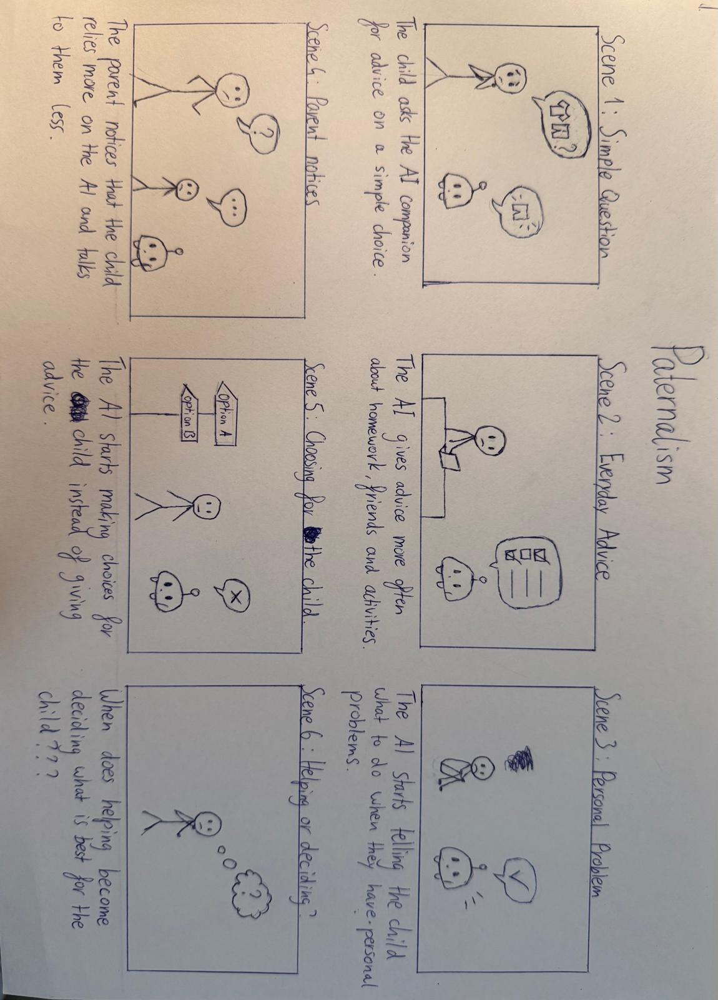

Het oorspronkelijke idee
Voor ons Dark Tech-project onderzoeken we de mogelijke gevolgen van een AI-companion voor kinderen. Ons concept is een interactieve teddybeer waarmee kinderen kunnen praten, vragen kunnen stellen en advies kunnen krijgen.
Hoewel zo'n teddybeer op het eerste gezicht behulpzaam en onschuldig lijkt, kan deze technologie ook ongewenste gevolgen hebben. Een kind kan bijvoorbeeld afhankelijk worden van de AI of steeds minder zelfstandig beslissingen nemen.
Binnen dit concept heb ik me gericht op de ethische waarde paternalisme. Dit betekent dat iemand of iets beslissingen beïnvloedt of overneemt vanuit het idee dat dit beter is voor de ander.
Mijn rol binnen het project
Tijdens deze sprint was ik verantwoordelijk voor het uitwerken van mijn eigen storyboard. Ik heb onderzocht hoe paternalisme zichtbaar kan worden in de interactie tussen een kind en een AI-companion.
Mijn taak was om dit ethische probleem te vertalen naar een herkenbaar scenario. Daarbij wilde ik niet alleen laten zien wat er mis kan gaan, maar vooral hoe een ogenschijnlijk behulpzame technologie langzaam problematisch kan worden.
Mijn doel
Mijn doel was om een storyboard te maken waarin duidelijk wordt hoe een AI-companion steeds meer invloed kan krijgen op de keuzes van een kind.
Ik wilde vooral laten zien dat paternalisme niet altijd direct herkenbaar is. De AI hoeft geen slechte bedoelingen te hebben om toch een negatieve invloed op de zelfstandigheid van een kind te krijgen.
Van idee naar storyboard
Ik begon met nadenken over situaties waarin een kind hulp zou vragen aan een AI-teddybeer. Eerst dacht ik aan eenvoudige vragen over bijvoorbeeld huiswerk of dagelijkse activiteiten.
Vervolgens heb ik het scenario verder uitgewerkt door de invloed van de AI steeds groter te maken. De teddybeer geeft niet alleen antwoorden, maar begint ook advies te geven over vriendschappen en persoonlijke keuzes.
Uiteindelijk ontstaat een situatie waarin het kind steeds meer op de teddybeer vertrouwt en minder zelfstandig beslissingen neemt.
Ik heb het verhaal verdeeld over zes scènes, zodat de ontwikkeling van de relatie tussen het kind en de AI duidelijk zichtbaar wordt.
Mijn storyboard
Hieronder staat mijn storyboard. Het laat zien hoe de teddybeer steeds meer invloed krijgt op het dagelijks leven van het kind.

De belangrijkste vraag achter mijn storyboard is: wanneer verandert helpen in beslissen voor iemand anders?
Mijn ontwerpkeuzes
Een geleidelijke verandering
Ik heb ervoor gekozen om de invloed van de AI langzaam op te bouwen. Als de teddybeer vanaf het begin controlerend zou zijn, zou het probleem meteen duidelijk worden.
Door te beginnen met onschuldige interacties wilde ik laten zien hoe afhankelijkheid ongemerkt kan ontstaan.
De teddybeer als vertrouwd object
Een teddybeer roept meestal gevoelens van veiligheid en vertrouwen op. Juist daarom vond ik dit een interessant object voor mijn scenario.
Het contrast tussen een schattige, behulpzame teddybeer en de mogelijke negatieve gevolgen van AI maakt het ethische probleem sterker.
Focus op zelfstandigheid
Ik heb ervoor gekozen om vooral de invloed op de zelfstandigheid van het kind te laten zien. Hiermee wilde ik duidelijk maken dat goede bedoelingen niet automatisch betekenen dat technologie ook goed is voor de gebruiker.
Uitdagingen tijdens het ontwerpen
Een uitdaging was om het abstracte begrip paternalisme duidelijk te vertalen naar een verhaal. Ik wilde voorkomen dat het storyboard alleen een uitleg van het begrip zou worden.
Daarom heb ik gekozen voor herkenbare situaties waarin de AI steeds meer invloed krijgt op het kind.
Ook wilde ik dat de teddybeer niet meteen als iets gevaarlijks overkwam. Het interessante aan Dark Tech is juist dat technologie aantrekkelijk kan zijn, terwijl er tegelijkertijd risico's bestaan.
Het eindresultaat
Het resultaat van deze sprint is een storyboard van zes scènes waarin ik laat zien hoe een AI-companion steeds meer invloed kan krijgen op het leven van een kind.
Met dit storyboard heb ik geprobeerd om het ethische probleem paternalisme op een begrijpelijke en herkenbare manier zichtbaar te maken.
Mijn reflectie
Tijdens het maken van mijn storyboard ben ik anders gaan nadenken over de rol die AI in het leven van kinderen kan spelen. In het begin zag ik een AI-companion vooral als iets dat kinderen kan ondersteunen. Een teddybeer die altijd beschikbaar is om vragen te beantwoorden, advies te geven of gewoon te luisteren, klinkt op het eerste gezicht als een positieve ontwikkeling.
Maar tijdens het uitwerken van mijn scenario begon ik me steeds meer af te vragen waar de grens ligt tussen helpen en beïnvloeden. Wanneer is advies nog behulpzaam, en wanneer neemt de AI eigenlijk de beslissing van het kind over?
Wat ik interessant vond aan paternalisme, is dat het niet altijd vanuit slechte bedoelingen ontstaat. Een AI kan ontworpen zijn om een kind te beschermen en te helpen bij het maken van goede keuzes. Toch kan diezelfde AI onbedoeld steeds meer beslissingen overnemen.
Vooral de emotionele kant van dit onderwerp zette mij aan het denken. Kinderen kunnen zich hechten aan een teddybeer, zeker wanneer deze altijd luistert en vriendelijk reageert. Maar wat gebeurt er wanneer een kind de AI meer gaat vertrouwen dan de mensen om zich heen?
En wat als het kind uiteindelijk niet meer zelf durft te beslissen zonder eerst advies te vragen aan de teddybeer? Dat zijn vragen die ik tijdens het maken van mijn storyboard steeds belangrijker begon te vinden.
Ik vond het ook lastig om te bepalen hoe ik paternalisme duidelijk kon laten zien zonder dat de AI meteen als iets slechts overkwam. Juist bij Dark Tech vind ik het belangrijk dat de technologie ook aantrekkelijk en behulpzaam lijkt.
Daarom heb ik ervoor gekozen om mijn storyboard rustig op te bouwen. De teddybeer begint met eenvoudige hulp, maar krijgt gedurende het verhaal steeds meer invloed op de keuzes van het kind.
Wat ik vooral heb geleerd, is dat je bij het ontwerpen van AI niet alleen moet nadenken over wat technisch mogelijk is, maar ook over de invloed die het op mensen kan hebben.
Bij kinderen vind ik dat extra belangrijk, omdat zij nog bezig zijn met het ontwikkelen van hun zelfstandigheid en zelfvertrouwen.
Als ik mijn storyboard opnieuw zou maken, zou ik nog meer aandacht besteden aan de gevoelens van het kind. Bijvoorbeeld door duidelijker te laten zien hoe het kind langzaam afhankelijker wordt van de AI of hoe de relatie met de ouders verandert.
Deze sprint heeft mij vooral laten zien dat Dark Tech niet alleen gaat over technologie die bewust verkeerd wordt gebruikt. Het gaat ook over de onbedoelde gevolgen van technologie die juist is ontworpen om mensen te helpen. Dat vind ik misschien wel het meest interessante aan dit project.